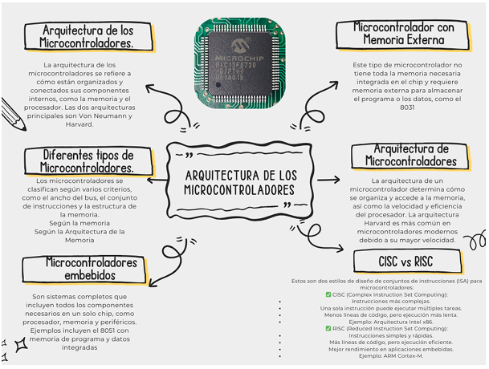

1. Arquitectura de los Microcontroladores
Es la organización interna y diseño de los componentes de un microcontrolador, que es un sistema en chip (SoC) que integra CPU, memoria (RAM, ROM, EEPROM o Flash), periféricos de E/S, temporizadores, ADC y buses de comunicación (UART, SPI, I2C, etc.). Existen dos arquitecturas comunes:
- Harvard: Memoria separada para instrucciones y datos (más rápida).
- Von Neumann: Memoria compartida para instrucciones y datos (más sencilla).
2. Diferentes Tipos de Microcontroladores
Se clasifican por su capacidad de procesamiento y aplicación:
- 8 bits: Básicos y económicos (Ej. PIC16F84, ATmega328).
- 16 bits: Mayor velocidad (Ej. MSP430).
- 32 bits: Alta potencia (Ej. ARM Cortex-M).
También se agrupan por familia:
- PIC (Microchip)
- AVR (Atmel/Microchip)
- ARM Cortex (ST, NXP, etc.)
- 8051 (Intel y otros)
3. Microcontroladores Embebidos
Están integrados en dispositivos electrónicos para realizar tareas específicas. Ejemplos incluyen:
- Microondas
- Impresoras
- Automóviles
4. Microcontrolador con Memoria Externa
Algunos microcontroladores requieren memoria externa cuando se necesitan más datos o instrucciones, como en sistemas con pantallas gráficas o procesamiento de imágenes. Se conectan mediante interfaces externas a RAM, ROM, EEPROM o Flash.
5. Arquitectura de Microcontroladores (Enfoque Técnico)
La arquitectura técnica define la interacción entre bloques internos:
- CPU para procesamiento
- Buses de datos, direcciones y control
- Memorias (ROM, RAM, EEPROM)
- Periféricos (ADC, timers, PWM, UART, SPI)
- Puertos de E/S digitales y analógicos
Optimizada para tareas específicas y bajo consumo de energía.
6. CISC vs RISC
CISC (Complex Instruction Set Computing)
- Instrucciones complejas y extensas
- Menos líneas de código
- Ejemplo: Intel x86
- Menor velocidad de ejecución
RISC (Reduced Instruction Set Computing)
- Instrucciones simples y rápidas
- Más líneas de código, pero mejor rendimiento
- Ejemplo: ARM Cortex-M
- Mejor para sistemas embebidos